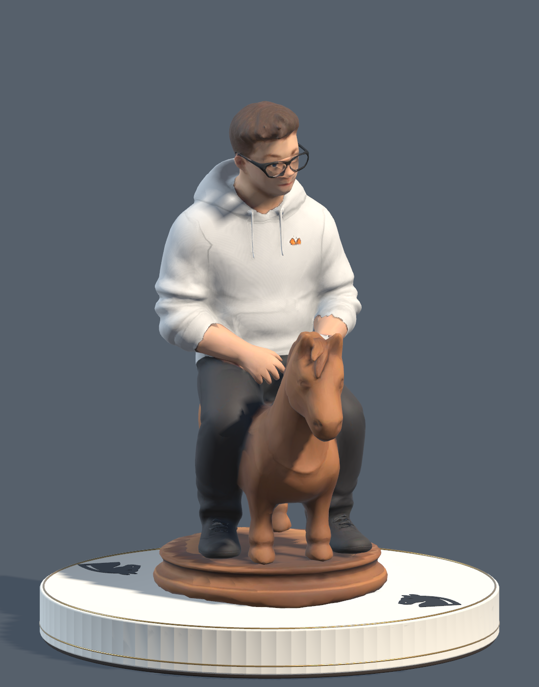
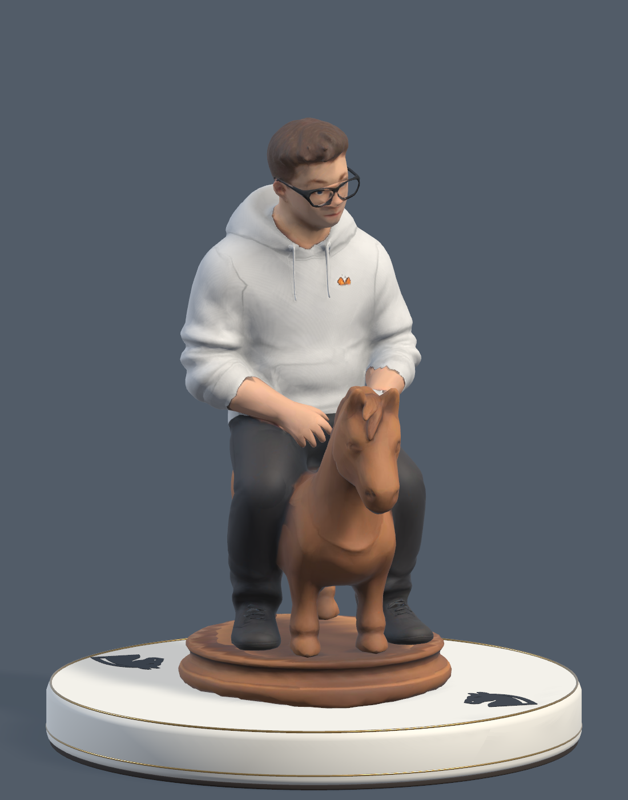
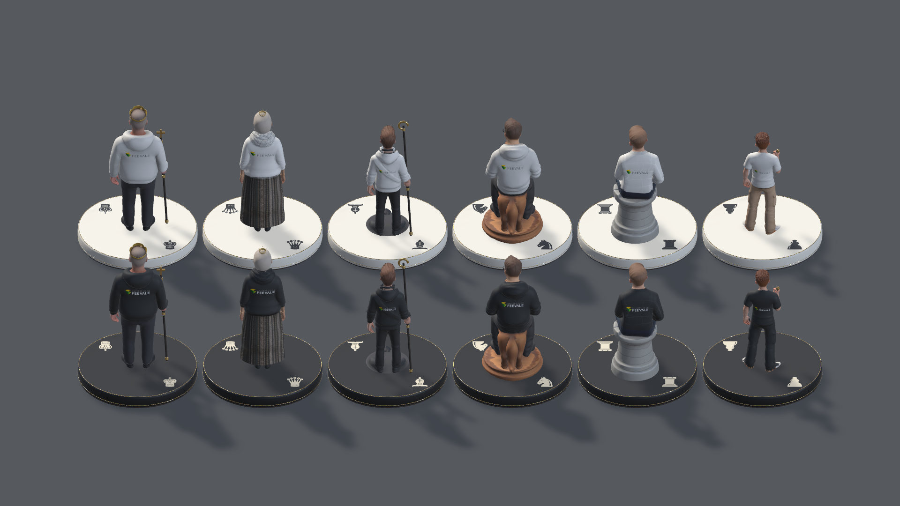
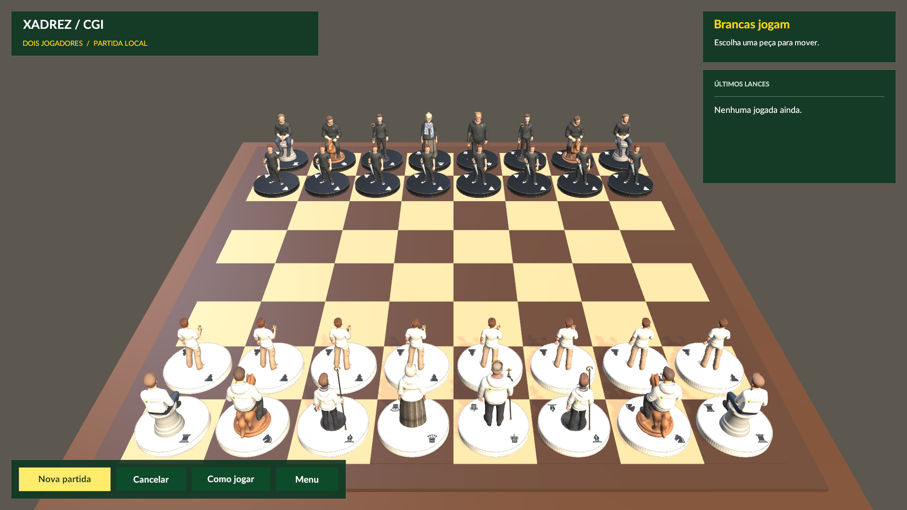
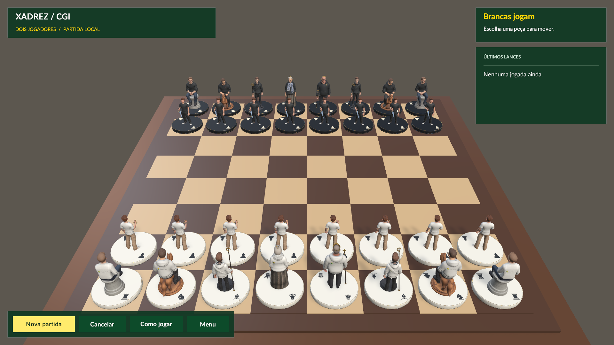
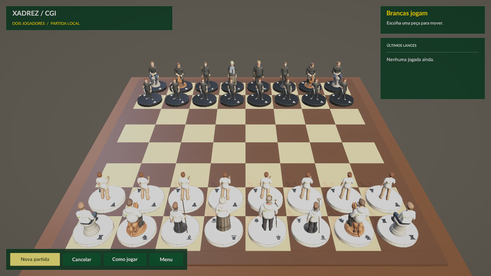
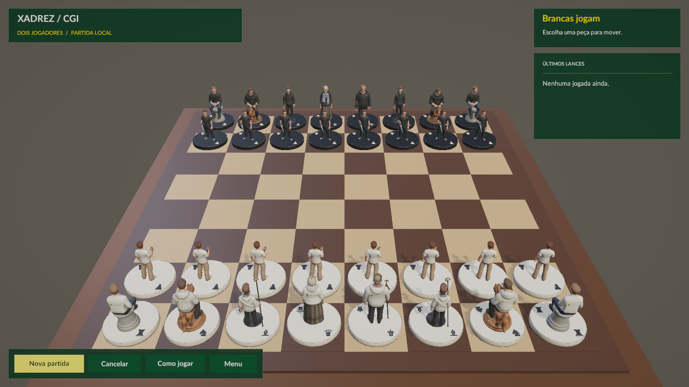
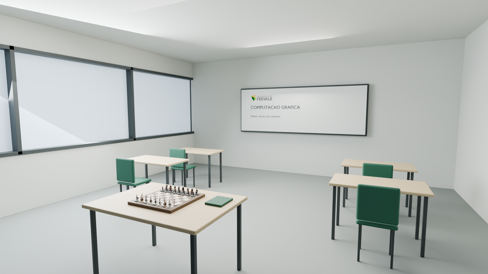

Chess CGI · Revisão local · 25.09.2026
Acabamento do elenco.
Uma sala de aula para a próxima partida.
Roupas mais contínuas, sombras mais suaves, bases uniformes e a Feevale impressa nas costas. A nova descoberta visual olha para o tabuleiro, a mesa e o espaço ao redor do jogador em VR.
Personagens e luz · aplicados no UnitySala de aula · estudo 3D, ainda fora do jogo
01 · Compare cada personagem
As câmeras são as mesmas. O “depois” inclui os ajustes de materiais e iluminação desta rodada. Clique em uma imagem para abrir o close completo.




Gustavo · cavalo
Ainda melhorar:
O que mudou em todo o conjunto
- Bases: laterais suavizadas e topo plano, removendo a aparência estriada. Símbolos e dimensões de encaixe preservados.
- Feevale: PNG oficial transparente, sem retângulo ou moldura. A marca acompanha a roupa e fica somente nas costas, com letras adequadas a cada fundo.
- Mãos dos acessórios: dedos com comprimentos e pontas menos uniformes; contato dos bastões mantido fora dos braços. Anatomia e textura da pele ainda pedem trabalho localizado.
- Roupa: corrigida a faixa clara que invadia a cargo do Matheus e os resíduos de cor na gola e no punho do Alex. A correção anterior do moletom do Gustavo foi preservada.

02 · A luz do preview estava afetando a partida
A luz usada no retrato da peça era direcional e também iluminava o tabuleiro. Agora ela é local e isolada. A luz principal voltou a produzir sombras, e o perfil PC permite sombras suaves. As roupas brancas conservam mais volume.




Capturas de revisão com pós-processamento suprimido, antes e depois, para manter interface e cores comparáveis. O perfil de pós-processamento da Main não foi alterado. O perfil Mobile também permanece como estava.
Ensaio adicional com o pós-processamento da Main




Ensaio da cena 3D com a mesma câmera e o pós-processamento ativo. Nesta captura técnica, o HUD foi convertido para a câmera e também recebe tonemapping; essa cor da interface não representa o HUD normal do jogo. O ensaio antecede apenas o último ajuste do punho do Alex e da transparência da marca.
03 · Nova avaliação do percurso
04 · Dentro de uma sala de aula da Feevale
Mesa de laminado claro, estrutura fosca, cadeiras verdes, janelas laterais e quadro com a marca. O tabuleiro continua sendo o centro da experiência.
Proposta de composição · render offline do BlenderUma sala inspirada na universidade, sem reproduzir uma sala específica. Os personagens são os assets reais. Mobiliário, medidas da sala e iluminação são propostas para a próxima implementação.

45 × 45 cmÁrea de jogo atual em VR
1,20 mAltura de referência dos olhos
1,30 × 0,90 mMesa proposta no estudo
Na vista sentado, os símbolos ficam pequenos e as casas distantes exigem avaliar alcance. Esses dois pontos orientam a próxima etapa: leitura e interação antes de acrescentar muitos objetos à sala.
| Ordem | Próxima melhoria | Como aceitar |
|---|---|---|
| 1 | Mesa e tabuleiro: tampo, pernas, borda chanfrada, materiais foscos e coordenadas. | Apoio convincente, peças assentadas e casas legíveis. |
| 2 | Seleção sem cobrir casas; símbolos e destinos distinguíveis também por forma. | Reconhecer tipo e jogada na distância real, nos dois lados. |
| 3 | Construir a sala com paredes, janelas, quadro e mobiliário. | Contexto de sala ao virar a cabeça, sem obstruir o espaço do jogador. |
| 4 | Traduzir luz e materiais para URP, medindo os 32 personagens junto do ambiente. | Frame time, memória, conforto e alcance verificados no headset. |
Descoberta completa, medidas e critérios · Abrir a fonte Blender
05 · O que foi verificado
32 / 32Testes PlayMode aprovados
22 / 22Casos de tecido aprovados
33Capturas finais no Unity
Auditorias de UV e geometria aprovadas: símbolos completos, marca nas costas, cabeça original e ausência das interseções testadas entre bastões e corpo. GLBs originais, GUIDs e estudos de animação preexistentes preservados.
Os testes cobrem regressões técnicas. Eles não encerram a avaliação artística. Dedos, transições entre tecidos e pele, coroa, cabelo e detalhes das fontes ainda merecem refinamento. Não foram medidos FPS, alcance ou reconhecimento em headset.
Verificação e hashes dos assets